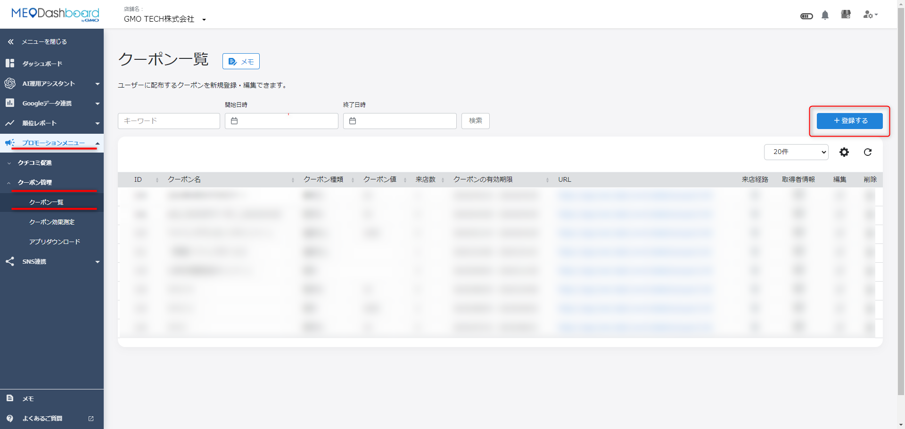
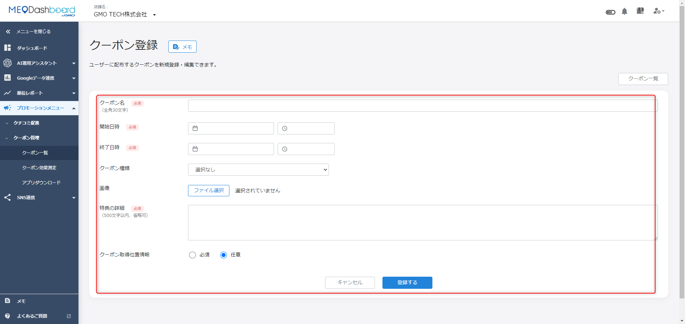
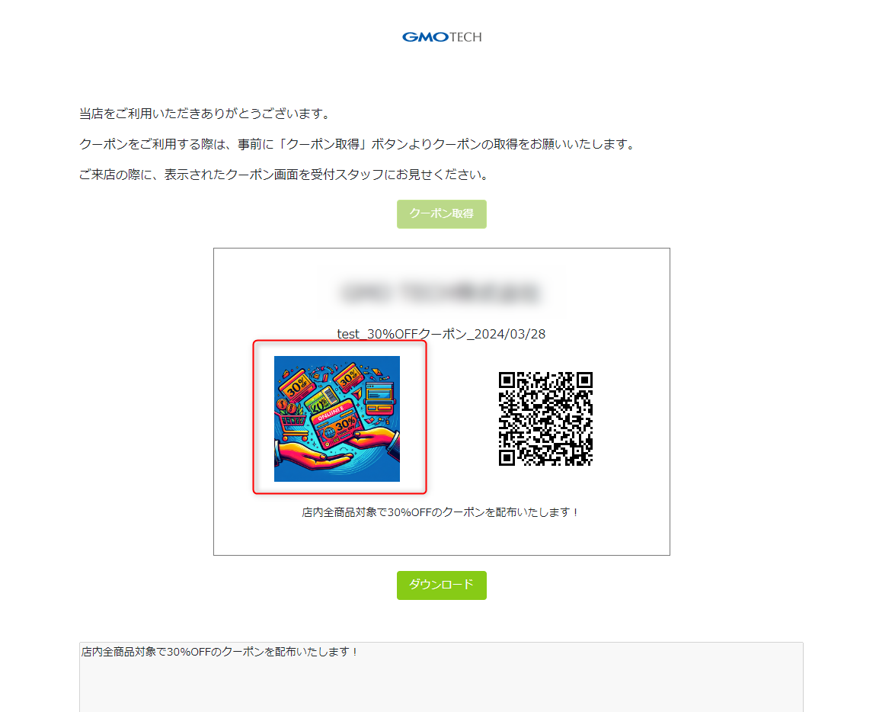
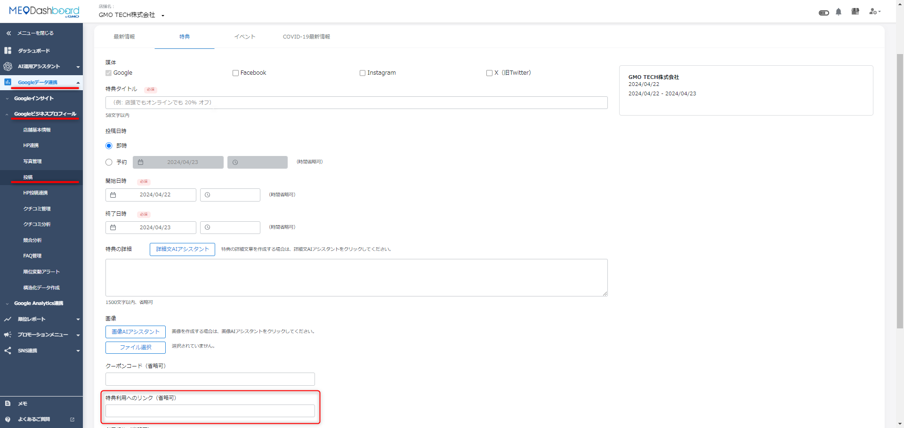
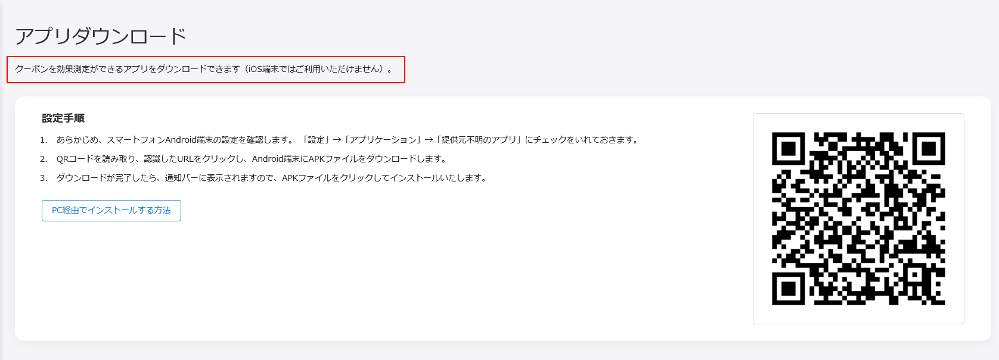
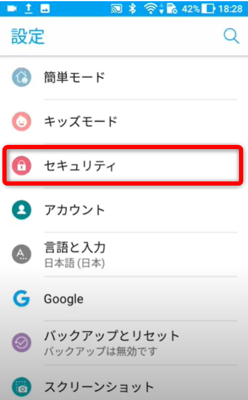

FoodLuck MEO 操作説明書 12
クーポン管理
割引クーポンの作成、投稿での配布、店舗での読み取りまでを迷わず進めるための現場マニュアル
| この資料の目的 クーポン管理は、実店舗で利用できる割引クーポンをFoodLuck MEO上で発行し、Google投稿などからお客様に案内する機能です。店舗側では、クーポン内容と有効期限を間違えないこと、配布リンクを正しく投稿すること、利用時にAndroid端末で読み取れることが重要です。 |
|---|
| 利用前の前提 クーポンの読み取りには専用アプリを入れたAndroid端末が必要です。店舗にAndroid端末がない場合、クーポン機能を現場で運用できないため、導入前にFoodLuck側へ確認してください。 |
|---|
1. クーポン管理でできること
クーポン管理では、クーポン名、割引内容、有効期限、画像、利用条件などを設定して、実店舗で使えるクーポンを発行できます。作成したクーポンはURLとして配布でき、Googleビジネスプロフィールの投稿機能では『特典』投稿のリンクとして案内できます。
| 機能 | できること | 飲食店での使い方 | 注意点 |
|---|---|---|---|
| クーポン一覧 | 作成済みクーポンの確認、URLコピー、管理 | 今配布中のクーポンを確認する | 期限切れや内容違いの配布に注意 |
| クーポン登録 | 割引率、割引額、有効期限、画像、詳細を登録 | ランチ割、宴会特典、再来店特典などを作る | 登録するとお客様に見える情報になる |
| 投稿で配布 | Google投稿の特典リンクにクーポンURLを貼る | 検索・マップ上で特典を見せる | 投稿内容とクーポン条件を合わせる |
| クーポンアプリ | Android端末でクーポンを読み取る | 店頭でクーポン利用を処理する | Android端末が必要 |
| 効果測定 | 配布総数や利用率を確認 | どのクーポンが使われたか振り返る | 売上との照合は店舗側で行う |
FAQ画像: クーポン一覧画面

- 左メニューの「プロモーションメニュー」>「クーポン管理」>「クーポン一覧」を開きます。
- 新規作成は右上の「+登録する」から行います。
- 一覧ではクーポン名、種類、有効期限、URL、編集、削除などを確認します。
2. クーポンを作成する
クーポンは、左メニューのクーポン管理から登録します。作成前に、割引内容、有効期限、利用条件、画像を決めておくと入力ミスを防げます。
- 左メニューで「プロモーションメニュー」>「クーポン管理」>「クーポン一覧」を開く。
- 画面右上の「+登録する」を押す。
- クーポン名を入力する。例: 平日ランチ100円引き、宴会幹事様特典。
- 開始日時と終了日時を設定する。お客様が使える期間なので、終了日を必ず確認する。
- クーポン種類を選ぶ。全体金額から率で引く場合は「割引%」、固定額を引く場合は「割引」を選ぶ。
- クーポン画像を設定する。
- 特典の詳細に、対象商品、利用条件、併用可否、提示タイミングなどを書く。
- クーポン取得位置情報を設定する。
- 内容を確認し、ページ下部の「登録する」を押す。
| 入力項目 | 書く内容 | 飲食店での注意 |
|---|---|---|
| クーポン名 | お客様に伝わる短い名前 | 『何が得か』が一目で分かる名前にする |
| 期間 | 使用可能な開始日時、終了日時 | 終了後も投稿が残っていないか確認する |
| 割引方法 | 割引%または固定額の割引 | 会計時にスタッフが計算しやすい内容にする |
| 画像 | pngまたはjpeg | 料理写真や特典内容が伝わる画像にする |
| 特典の詳細 | 利用条件、注意事項、対象外条件 | 他クーポン併用不可、ランチ限定などを明記する |
| 位置情報 | 取得時に位置情報を必須または任意にする | 取得しやすさを優先するなら任意も検討する |
| 保存前チェック クーポンはお客様に直接見える情報です。登録前に、割引額、対象商品、有効期限、利用条件、画像が合っているかを必ず確認してください。 |
|---|
FAQ画像: クーポン登録画面

- クーポン名、開始日時、終了日時、クーポン種類、画像、特典の詳細、位置情報を設定します。
- 外部に反映される情報なので、登録前に内容を必ず確認します。
3. クーポン画像の条件
クーポン画像は、お客様が特典を見たときの第一印象になります。画像が小さすぎる、容量が大きすぎる、比率が合わない場合は登録できないことがあります。
| 項目 | 条件 |
|---|---|
| 画像タイプ | png / jpeg |
| 画像サイズ | 最小10,000バイト、最大5,000,000バイト |
| 画像幅 | 384ピクセルから2,544ピクセル |
| 画像高さ | 216ピクセルから1,430ピクセル |
- 料理写真を使う場合は、対象商品が分かる写真を選びます。
- 割引額や条件を画像だけに入れず、特典の詳細にも必ず文章で書きます。
- 暗い写真、文字が小さい画像、横長すぎる画像は避けます。
- 画像を変更した場合、投稿や店内案内と内容が一致しているか確認します。
FAQ画像: クーポン画像の表示イメージ

- 画像はお客様がクーポンを見るときの印象に関わります。
- 写真と文章の条件が食い違わないようにします。
4. 作成したクーポンを投稿で配布する
作成したクーポンは、クーポン一覧でURLをコピーし、Googleビジネスプロフィールの投稿機能から『特典』として配布できます。Google検索やGoogleマップで見たお客様に特典を案内できるため、来店動機を作りたいときに使います。
- 左メニューで「プロモーションメニュー」>「クーポン管理」>「クーポン一覧」を開く。
- 配布したいクーポンのURLをコピーする。
- 左メニューで「Googleデータ連携」>「Googleビジネスプロフィール」>「投稿」を開く。
- 右上の「新規投稿」を押す。
- 投稿種類で「特典」を選ぶ。
- 「特典利用へのリンク」に、手順2でコピーしたクーポンURLを貼り付ける。
- タイトル、説明文、掲載日時、必要項目を入力する。
- 内容を確認し、「登録する」を押す。
FAQ画像: 投稿の特典リンクにクーポンURLを入れる

- 投稿種類で「特典」を選びます。
- 「特典利用へのリンク」に、クーポン一覧でコピーしたURLを貼り付けます。
- 投稿本文とクーポン詳細の条件が食い違わないようにします。
| 投稿配布の注意 クーポンの有効期限が過ぎたあとも投稿が残っていると、お客様とのトラブルにつながります。終了日が近いクーポンは、投稿の掲載期間も合わせて設定してください。 |
|---|
5. 店舗で使うクーポンアプリを準備する
クーポンを店舗で読み取るには、Android端末に専用アプリをインストールしておく必要があります。クーポン運用を始める前に、実際に作成したクーポンを読み込めるかテストしてください。
二次元バーコード版
- Android端末の設定で「アプリケーション」>「提供元不明のアプリ」を許可する。
- 注意喚起が表示された場合は内容を確認し、運用端末として問題ない場合のみ進める。
- FoodLuck MEOにログインし、「プロモーションメニュー」>「クーポン管理」>「アプリダウンロード」を開く。
- 表示された二次元バーコードをAndroid端末で読み取る。
- 「アプリのダウンロード」>「インストール」を選択する。
- アプリを起動し、IDとパスワードでログインする。
- 作成したクーポンが読み取れるかテストする。
FAQ画像: アプリダウンロード画面

- アプリはAndroid端末で利用します。iOS端末では利用できません。
- 二次元バーコードをAndroid端末で読み取り、APKファイルをダウンロードします。
FAQ画像: Android端末の設定画面

- インストール前に、Android端末側で提供元不明のアプリに関する設定を確認します。
- 店舗運用端末でのみ設定し、私用端末での運用は避けます。
APKファイルダウンロード版
- ダウンロードボタンからAPKファイルをPCに保存する。
- Android端末側で「提供元不明のアプリ」を許可する。
- PCとAndroid端末をUSBケーブルで接続する。
- Android端末のUSB接続を開き、マウントを選択する。
- PCでAndroid端末のドライブを開き、APKファイルをコピーする。
- Android端末側でUSBストレージをOFFにする。
- 端末内のAPKファイルをタップし、インストールする。
- インストール後、アプリアイコンが表示されることを確認する。
| 現場テスト インストールだけで終わらず、実際に作成したクーポンを読み込めるか、会計時のスタッフ導線で確認してください。使い方が分からないスタッフがいると、せっかく配布したクーポンがお客様対応の負担になります。 |
|---|
6. 店舗でのクーポン運用
クーポンは作って配るだけではなく、店頭でスムーズに使えることが大切です。お客様がクーポンを提示したときに、スタッフが条件を確認し、アプリで読み取り、会計に反映できるようにしておきます。
□ クーポンの有効期限をスタッフが把握している。
□ 対象商品、対象時間、併用可否をスタッフが説明できる。
□ Android端末が充電され、アプリにログインできる状態になっている。
□ クーポンを読み取った後の会計処理方法をレジ側でも確認している。
□ Google投稿やLINEなど、配布している文面と店頭ルールが一致している。
□ 利用率や配布数を月次で確認し、次の特典内容に活かしている。
| 場面 | 店舗での対応 | トラブル防止 |
|---|---|---|
| お客様が提示 | 画面のクーポン名と期限を確認する | 期限切れや別店舗クーポンでないか見る |
| 利用条件の確認 | 対象商品、時間帯、人数、併用可否を見る | 曖昧な条件は事前に詳細へ明記する |
| 読み取り | Android端末の専用アプリで読み取る | 端末の充電、ログイン状態を営業前に確認する |
| 会計 | 割引率または割引額をレジに反映する | レジ処理ルールをスタッフ間で統一する |
7. よくある困りごと
| 困りごと | 確認すること | 対応 |
|---|---|---|
| クーポン管理メニューが見当たらない | 契約プラン、権限、店舗/グループ画面 | FoodLuck側に確認する |
| クーポン画像が登録できない | 画像形式、容量、幅、高さ | png/jpeg、10KBから5MB、指定ピクセル範囲内に調整する |
| 投稿でクーポンを配布できない | クーポンURLをコピーしているか、投稿種類が特典か | クーポン一覧からURLをコピーし、特典利用リンクへ貼る |
| アプリを入れられない | Android端末か、提供元不明アプリを許可しているか | 二次元バーコード版またはAPK版で導入する |
| クーポンを読み取れない | アプリログイン、通信、クーポン期限、対象クーポン | 営業前にテスト用クーポンで読み取り確認する |
| 利用条件でお客様と認識が違う | 投稿文、クーポン詳細、店頭案内が一致しているか | 条件を短く明確に書き直す |
8. 飲食店の月次チェックリスト
□ 配布中のクーポン一覧を確認し、期限切れが残っていないか見た。
□ Google投稿、LINE、店内POPなどの案内文とクーポン条件が一致しているか確認した。
□ 画像、特典詳細、利用条件が分かりやすいか見直した。
□ クーポンアプリを使うAndroid端末が正常に動くか確認した。
□ 利用率や配布数を見て、次回の特典内容を考えた。
□ スタッフが会計時の割引処理を迷わずできるか確認した。
| 現場で使いやすいクーポンにするコツ 飲食店では、複雑な条件よりも『平日ランチ100円引き』『宴会コース幹事様1名分半額』のように、お客様にもスタッフにも一瞬で分かる特典のほうが運用しやすくなります。 |
|---|
9. この資料に反映したFAQ記事
クーポン管理カテゴリ配下のFAQ記事を、作成、画像条件、投稿配布、アプリ導入、現場運用に分けて反映しています。
| No. | FAQ記事 | 反映先 |
|---|---|---|
| 1 | 作成したクーポンを投稿機能で配布する方法について | 4. 投稿配布 |
| 2 | クーポンの作成方法について | 2. 作成 |
| 3 | クーポンの画像サイズについて | 3. 画像条件 |
| 4 | クーポンアプリのダウンロード方法 （APKファイルダウンロード版） | 5. アプリ導入 |
| 5 | クーポンアプリのダウンロード方法（二次元バーコード版） | 5. アプリ導入 |
| 6 | クーポン機能について | 1・6. 概要と運用 |